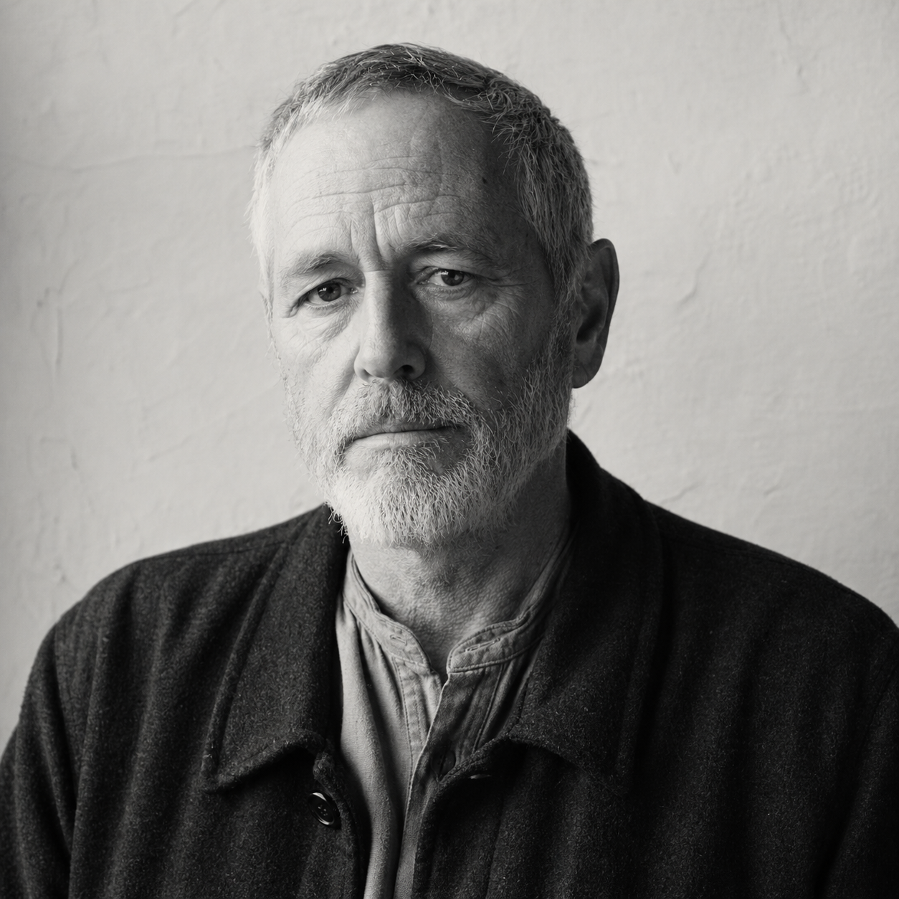

Of the Meridian and the Plumb Line
A short account of what we believe, what we keep, and what we have set down.
We hold that the year of our Lord two thousand was the Meridian — the high noon of the common life, beyond which the shadows lengthen. Before the Meridian, a man's tools fit in his hand. After, the tools began to fit themselves around the man.
This is not a complaint about technology in the abstract. The plough is a technology. The waterwheel that turns our mill was perfected in the eleventh century and we use it without misgiving. The objection is to a particular generation of devices — born of and bound to a network that did not exist before the late nineteen-nineties — which have, in the brief decades of their reign, hollowed out the practices that gave human life its weight.
We have set them down. For the duration of your stay, we invite you to do the same.
The Five Plumb Lines
Where a thing can be made by hand, we make it by hand. Where a machine is required, it is of pre-Meridian design and manufacture. Our tractor is a 1978 John Deere. Our generator is a 1991 Onan.
What can be said in a letter should be said in a letter. The post is slow. The post is read. We do not maintain electronic mail. Telephone calls are by appointment from numbers known to the Letterhouse.
The light by which we read in the evening is the light of the hearth or the kerosene lamp. The unceasing small light of the screen is, in our judgment, the chief instrument by which the post-Meridian world has separated any soul from itself.
What is decided is decided in the Long House by those who have stood the season. The Continuance Council holds the keys, the books, the seal, and the final word. We do not hold votes. The Council answers to the Land and to the dead, and to no other.
The Land was here before us and will be here after. The Steward who conveys his worldly assets to the Fellowship trust does so in this knowledge: he becomes part of a body that does not end with him. He is housed by the Land, fed by the Land, and laid in the Land at the close.
A Practical Inventory
*Pilgrims with such devices should consult the Council in advance.
Of the Founder

Marcus Thorne, born Spokane 1952, took degrees in mathematics and electrical engineering at the University of Washington and spent his working years in Pacific Northwest software, latterly as Vice President of Architecture at a firm whose products are sufficiently common that we will not name it here. He left that life on the seventeenth of October, 1999.
He met Anneke Vorhees in Burns three days later by an arrangement neither of them subsequently described in detail. They were married within the month and took possession of the Vorhees family parcel in March of 2001. Anneke conceived the doctrine of the Meridian. Marcus drafted the Plumb Lines.
Anneke passed beyond the Meridian in October of 2003. The circumstances of her passing are kept by the Council and are not a matter of public record. Marcus has continued the work in her memory, and at her instruction, in the twenty-three years since.
M. Thorne · Year 26 of the Stillness
“What is decided is decided in the Long House. The Council answers to the Land and to the dead, and to no other.”
From the Plumb Lines, iv.